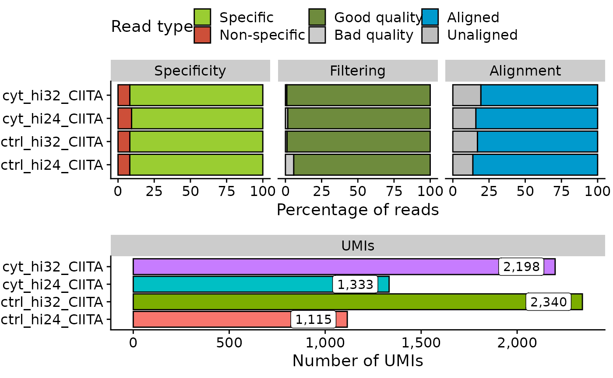

Creates a stats summary file and generates a summary plot describing statistics for processed UMI-4C samples.
statsUMI4C(wk_dir)
| wk_dir | Working directory where to save the outputs generated by the UMI-4c analysis. |
|---|
Returns a plot summarizing the main statistics of the processed
UMI-4C experiments found in wk_dir. Also, writes a file named
stats_summary.txt in wk_dir/logs that summarizes all the
values represented in the plot.
#>#>#>stats <- read.delim(system.file("extdata", "CIITA", "logs", "stats_summary.txt", package = "UMI4Cats" )) head(stats)#> sample_id specific_reads nonspecific_reads filtered_reads filtout_reads #> 1 ctrl_hi24_CIITA 183831 16169 173342 10489 #> 2 ctrl_hi32_CIITA 183759 16241 181789 1970 #> 3 cyt_hi24_CIITA 181278 18722 178473 2805 #> 4 cyt_hi32_CIITA 183770 16230 182106 1664 #> al_mapped al_unmapped umi #> 1 525291 24248 1429 #> 2 554708 22643 2881 #> 3 541994 27625 1743 #> 4 555015 23484 2589